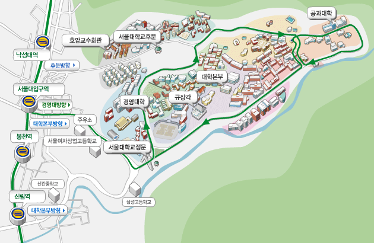

<table width="720"><tr><td>

<h1 align="center">
<span style="text-decoration: none">정보과학회 프로그래밍언어연구회 (SIGPL)
<br>2011 학술대회
</span>
</h1>
<center><table><tr><td>
 일시: &nbsp; </td>
<td> 2011년 9월 24일 (토) 오후 1:00-6:00</td></tr>
<tr><td>장소:</td><td>서울대학교 302동 (제2공학관) 107호</td></tr>
<tr><td valign="top">주관:</td><td> <a href="http://www.kiise.or.kr" target="top">한국정보과학회</a> <a href="http://sigpl.or.kr"
											   target="top">프로그래밍언어연구회</a>,<br>
<a href="http://rosaec.snu.ac.kr" target="top">소프트웨어무결점연구센터</a> 공동주관
</td></tr>
<tr><td>URL:</td><td><a href="http://sigpl.or.kr/conf/2011">http://sigpl.or.kr/conf/2011</a></td></tr>
</table>
</center>
<br>

안녕하십니까?  한국정보과학회 프로그래밍언어연구회(SIGPL)는
소프트웨어무결점연구센터과 공동으로 2011
프로그래밍언어연구회 학술대회를 서울대학교에서 개최합니다. 회원
여러분의 많은 참여와 관심을 부탁드립니다.

<br><br><b>한국정보과학회 프로그래밍언어연구회 운영위원장 이 광 근</b>

<h2> 프로그램  </h2>
<ul>
<li> 프로그램
<table border="1pt" bordercolor="#808080" cellspacing="0"><tr><td>
<table>
<tr><td rowspan="1">12:00</td>
<td colspan="2"> 등록</td></tr>

<tr><td >13:00</td><td bgcolor="#ffddcc" colspan="2"> 개회 </td></tr>

<tr><td></td>
<td width="60%"> SIGPL 학술대회 개회사</td>
<td>위원장: 이광근 교수 (서울대)</td></tr>

<tr><td>13:10</td><td bgcolor="#ffddcc" colspan="1">초청 연설(Invited
    Talks)</td><td bgcolor="#ffddcc"> 좌장: 류석영 교수 (KAIST)</td></tr>
<tr><td rowspan="3"></td>
  <td>
  접근 제어 기반 NFC (near field communication) 응용프로그램 실행 환경
  </td><td>
  최광훈 교수  (연세대)</td></tr>
  <tr><td>
   후위부자유 정규언어의 복합 연산 상태복잡도
  </td><td>
  한요섭  교수 (연세대)</td></tr><tr><td>
  Evaluating Semantic Similarities between Functions via Semantic-based Analysis
  </td><td>
  정영범 박사  (서울대)</td></tr>
<tr><td>15:10</td><td colspan="2"> 휴식</td></tr>

<tr><td>15:25</td><td bgcolor="#ffddcc"> 논문발표 (Work-in-Progress) </td>
<td bgcolor="#ffddcc"> 좌장: 박성우 교수 (포항공대)</td></tr>
<tr><td rowspan="3"></td>
 <td>
  Coq Mechanization of Featherweight Fortress with Multiple Dispatch and Multiple Inheritance
  </td><td>
  김지응, 류석영  (KAIST)</td></tr>
  <tr><td>
  A Judgmental Subtyping System with Intersection Types and Model Types
  </td><td>
서정봉, 박성우  (포항공대)</td></tr>
  <tr><td>
  정적 분석기의 성능 향상 기법들
  </td><td>
  오학주, 이우석, 이광근  (서울대)</td></tr>

<tr><td>16:55</td><td colspan="2"> 휴식</td></tr>

<tr><td>17:10</td><td bgcolor="#ffddcc">기업체 논문 발표
    (Industry Session)</td><td bgcolor="#ffddcc"> 좌장: 한환수 교수 (성균관대)</td></tr>
  <tr><td></td>
  <td>
    Program Understanding Features for Samsung SDK
  </td><td>
  강현구 박사, 최웅식 박사 (S-Core)
  </td></tr>

<tr><td>17:50</td><td bgcolor="#ffddcc" colspan="2"> 페회 </td></tr>

<tr><td></td>
<td width="60%">SIGPL 학술대회 폐회사</td>
<td>위원장: 이광근 교수 (서울대)</td></tr></table>
</td></tr></table>
</ul>

<h2> 등록안내 </h2>
<ul>
<li> 등록비 (등록 마감: <font color="red">2011년 9월 24일</font>)
<table border="1" bordercolor="#808080" cellspacing="0">
<tr><th>　</th><th>학생</th><th>일반</th></tr>
<tr align="center"><th>등록비</th><td>50,000원</td><td>100,000원</td>
</tr>
</table>
<li>영수증은 등록 데스크에서 발급 가능
<li>등록방법: <a href="/pay/conf.php">등록 페이지를 통하여 등록</a>
</ul>


<h2> 준비위원회 </h2>
<ul>
<li> 조직위원장: 이광근 교수 (서울대)
<li> 학술위원장: 한환수 교수 (성균관대)
<li> 문의: 총무 한환수 교수 (성균관대)
</ul>

<h2> 장소 안내 </h2>
<ul>
<li> 서울대학교 관악캠퍼스 302동 (제2공학관) 107호
<ul>
<li> 주소: 서울시 관악구 관악로 1 서울대학교 302동 107호 (우) 151-742
<li> 지도: 아래 지도에서 우측상단 공과대학 표기 건물
  (<a href="http://map.naver.com/index.nhn?dlevel=11&lat=37.448613&lng=126.9525554&menu=location&pinId=18729196&pinType=site&pinTitle=N0lTYzdKcTQ2NHlBN1pXWjZyV1E3S0NjTXVxenRlMlZtZXEwZ0ElM0QlM0Q%3D&mapMode=0&enc=b64"
      target="top">네이버지도</a>)
<br>

</ul>
<li> 대중교통
<ul>
<li> <b>2호선 낙성대역 4번 출구에서 마을버스 02번 승차하여 신공학관 하차</b>
<br>
노선도: 낙성대역→ 후문(20) → 관악사(19) → 관악사삼거리(15) → 노천강당(14-1) → 공동기기원(12) → 유전공학연구소(11) → 에너지자원연구소(7-1) → 신소재연구소(7) → 제2파워플랜트(8) → 신공학관(9)
<li>
 <b>2호선 서울대입구역 3번 출구/서울대학교 정문에서 시내버스 5511/5513번 승차하여
 신공학관 하차</b>
<br>
노선도: 정문(1) → 법대입구(2) → 행정관입구(4) → 제3식당(5) → 공대입구(6) → 신소재연구소(7)
     → 제2파워플랜트(8) → 신공학관(9)
</ul>
<li> 그 외 자세한 교통편은 <a href="http://www.snu.ac.kr" target="top">서울대학교 홈페이지</a>에서 대학소개 > 방문 및 견학 > 관악캠퍼스 참조
</ul>
</td></tr></table>
